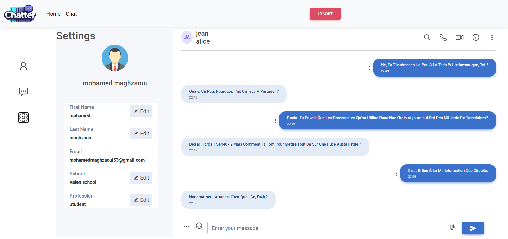
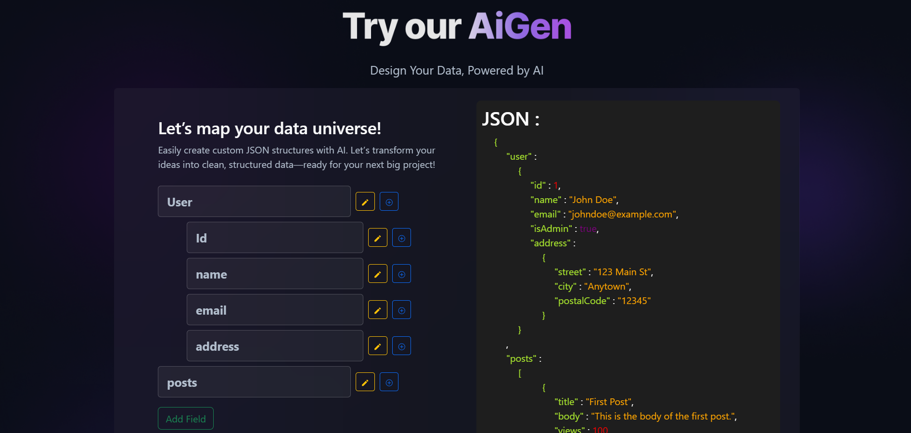
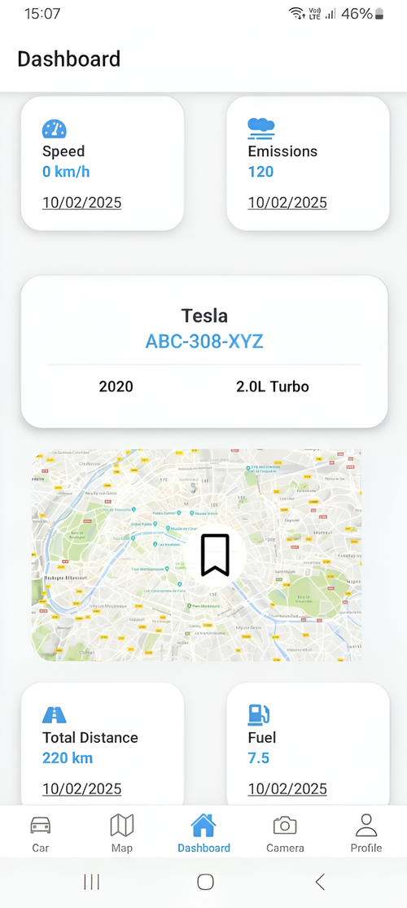

Mes Projets
Découvrez mon portefeuille diversifié de projets, témoignant de mes compétences, de ma créativité et de mon dévouement dans divers domaines, reflétant mon parcours dans l'innovation.

Application Deadline
Un outil de gestion des délais au niveau de l'entreprise pour la maintenance rationalisée, les rendez-vous clients, et plus encore.Voir plus

Backoffice
Une plateforme sécurisée avec Symfony pour une gestion efficace et intuitive de mon portfolio garantissant la performance et la simplicitéVoir plus

Station Météo
Une application développé en équipe pour visualiser différentes valeurs environnementales, avec un backend Symfony et un frontend ReactVoir plus

Voir plus
Chat Application
Une plateforme de messagerie instantanée développée avec Laravel, React, Docker, et MySQL, intégrant CI/CD, sécurité, et interface réactive.Voir plus

Voir plus
AiGen
Une application React-Django utilisant l'API Gemini pour générer des données JSON/YAML dynamiques et personnaliséesVoir plus

Fleet Management App
Une application mobile utilisant React Native et Flask pour le suivi en temps réel, l'analyse d'images avec Gemini et la surveillance du carburantVoir plus